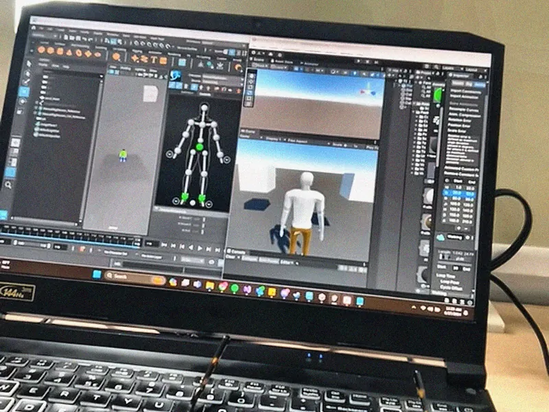
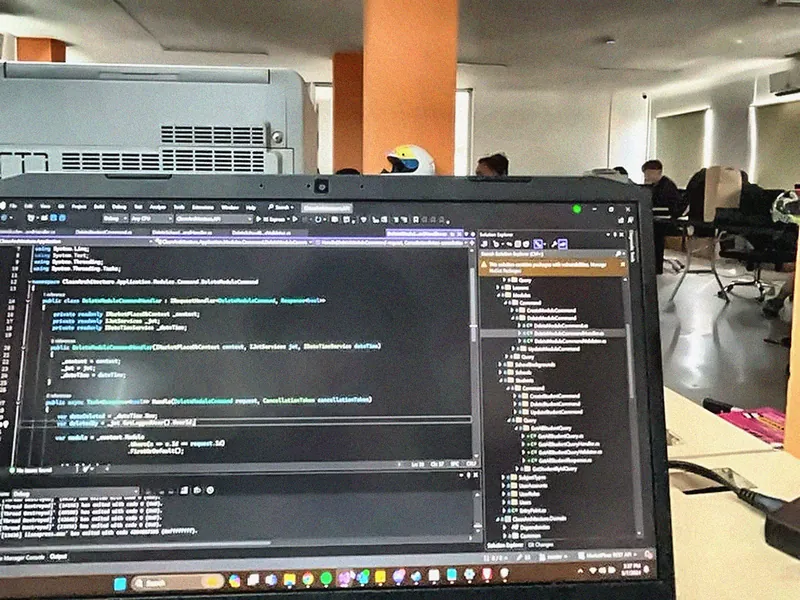
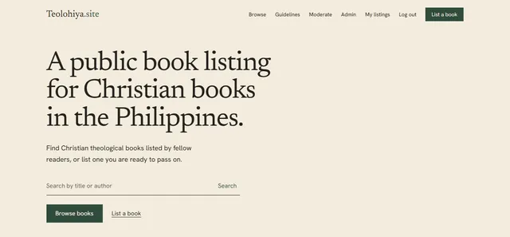
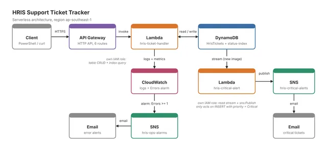
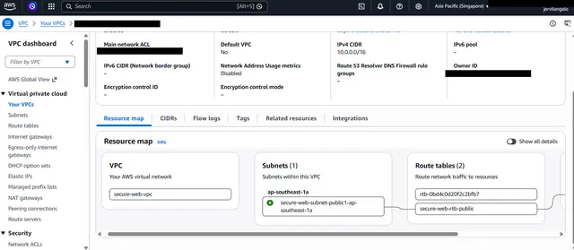

-
ChildhoodIt started with curiosity.
Long before I understood programming or cloud computing, I was already fascinated by technology. Computers and games made me want to know how it all worked, and that curiosity would eventually shape the path I chose.
-
2019Turning curiosity into education.
I enrolled at FEU Institute of Technology for a Bachelor of Science in Information Technology, specialising in Animation and Game Development. It gave my curiosity a technical foundation: programming, problem-solving and how software is put together.

Unity and C# for interactive projects Graduating with a BSIT - Unity and C# for interactive projects gave me my first real programming.
- Graduated with a BS in Information Technology, major in Animation and Game Development.
Certifications earned in these years
- CCNA: Introduction to NetworksCisco, December 2021
- Information Technology Specialist in DatabasesCertiport, January 2022
- CCNA: Switching, Routing, and Wireless EssentialsCisco, April 2022
- CyberOps AssociateCisco, November 2022
- Autodesk Certified User: MayaAutodesk, November 2023
- NDG Linux EssentialsCisco Networking Academy, 2023
-
2024My first experience building software.
As an IT Intern and C# Programmer at TechFactors Inc., I moved from coursework to a real development team, writing C# back-end code, including REST API work, for the company's applications.

TechFactors Inc., Quezon City · January to July 2024 - Developed in C# across the back end, including REST API work, and on the front end of company applications.
- Gained hands-on exposure to the full software development workflow alongside the development team.
-
2025Learning technology from the ground up.
My first full-time IT role, as a Field / Onsite Engineer for an HP service centre, put me in front of real hardware and real users at client and partner sites. It is where my troubleshooting habits were formed.
HP Service Center / Actionlabs IT Services · May to November 2025 - Installed, repaired and troubleshot HP printers, POS systems, laptops and workstations at multiple sites.
- Installed operating systems and resolved hardware and software faults in enterprise environments.
- Diagnosed user issues on site, set expectations with clients and partners, and documented resolutions.
-
2026Supporting enterprise technology.
Since July 2026 I have worked in HRIS Technical Support, giving Level 1 support for an HR information system used by seafarers and office staff. It widened my view from single machines to enterprise applications, data and operational workflows.
- Resolve user-reported issues in the HRIS and escalate complex cases.
- Support the HRIS implementation with the vendor, including data gathering and template completion.
- Built a template tracker that automates and monitors implementation progress: HRIS Template Completion Tracker.
- Document procedures and known fixes to speed up issue resolution.
Also in 2026
- Cisco Networking BasicsJanuary 2026
- Google IT Support, and System Administration and IT Infrastructure ServicesFebruary 2026
- ECCM websiteA church website with a custom domain
-
2026 to nowDiscovering the cloud.
I keep studying cloud computing, earning certifications and then building something real with what I learn. Pick a project to see what it uses.
 AWS Certified Cloud Practitioner
AWS Certified Cloud Practitioner AWS Certified AI Practitioner
AWS Certified AI Practitioner OCI Foundations Associate
OCI Foundations Associate OCI AI Foundations Associate
OCI AI Foundations Associate

Teolohiya.site
A live, moderated listing board for Christian theological books in the Philippines, on Next.js and AWS Amplify Gen 2.
Read the case study
AWS Serverless Ticketing API
An HRIS ticketing API with a DynamoDB stream that triggers email alerts for Critical tickets through SNS.
See the full breakdown
Secure EC2 Web Server
A practice build for AWS networking and security: Nginx on EC2 inside a custom VPC, with SSH limited to my IP.
See the full breakdown -
NextThe journey continues.
From troubleshooting hardware to supporting enterprise applications and building cloud solutions, every experience has shaped my technical foundation. I'm continuing to learn, experiment and build toward a career in cloud engineering.
From curiosity to the cloud.
Seven chapters, from a childhood fascination with computers to IT support, enterprise HRIS and the AWS projects I build today.
- Now
- HRIS Technical Support
- Learning
- AWS and cloud infrastructure
- Goal
- Cloud Engineer